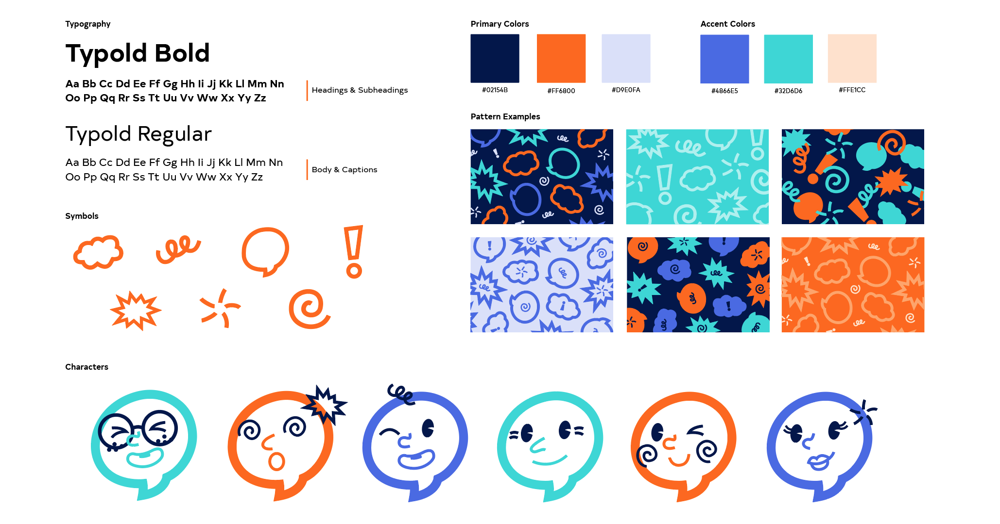

Timeline
Sep - Dec '20 (12 weeks)
Tools
Adobe Illustrator, Adobe InDesign, Adobe Photoshop
The Toronto Comic Arts Festival aspires to bring the literary and artistic merit of comic books and graphic novels to the general public. The Toronto Comic Arts Festival’s brand currently does not have enough consistency tying all of its different assets and sub-events together. While the event posters promote the featured artists and guests well, the event itself lacks a clear voice and image. TCAF required a clearer brand voice and a more cohesive look across all of the brand’s platforms that still allows space for featured artists to express themselves as well. In addition, the brand needs to emphasize the event’s values of diversity and inclusivity to counter the recent negative press. Note: This rebrand is simply a proposal, I am not affiliated with TCAF.
Logo
The logo uses interlocking shapes and letters to represent the different groups of fans and creators who originally came together to combine their separate events into one large comic event: TCAF. The smiling face formed by the curved “T” and “F” provide a friendly and welcoming feel without appearing childish. The speech bubble and the exclamation mark evoke elements that are commonly found in comic books, but do not point any specific genre of comics.
Visual System
The fluid identity elements are comprised of seven main graphic icons that were created to enhance the TCAF brand with dynamic visuals while still matching the style of the logo. The fluid elements were based on icons that are commonly found in comic books and each one represents one of the brand’s values. The star represents diversity.The five separate pieces come together to form a firework shape, as our differences are something to celebrate. The squiggle resembles two people embracing, representing inclusivity: TCAF encourages community building through comics. The speech bubble represents freedom of expression as TCAF promotes comics and art as a way of self-expression. The spiral represents the endless possibilities for learning from the comic world offers visitors at TCAF. The starburst represents fun. TCAF invites visitors to engage in fun activities to experience the joy that comics can bring. The exclamation mark represents wonder, as visitors are sure to be surprised and amazed by the talent showcased at TCAF.
The outlined speech bubble icon may also used to create characters. There are sets of eyes, noses and mouths that can be swapped out to create different faces. A plethora of combinations can be made to represent different types of people, further reinforcing the new tagline: "comics for everyone".
Applications
Patterns, icons and characters can be used to create varied content for posting on social media to engage audiences with the brand. Examples include story templates that viewers can use to share their thoughts and promote the event, countdowns until the event, etc.
Instagram Posts
Instagram Stories
Character Posters

Promotional Stickers

Corporate Stationery

The full brand book can be viewed here.